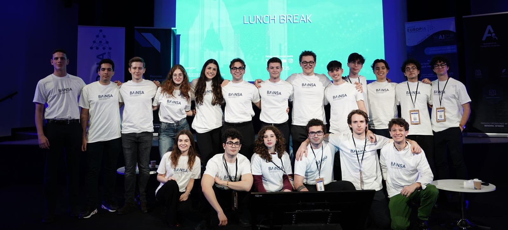

Forbes Italia · Next Leaders ·
BAINSA, the AI research lab run by students
From Bocconi to Stanford and MIT: the founders discuss building Italy’s largest student-run nonprofit AI research lab.

This is an English summary of an interview first published in Italian. Read the original on Next Leaders by Forbes.
What BAINSA is
BAINSA, the Board of AI & NeuroScience Associations, is the first and largest non-profit AI research lab in Italy run by university students. Its members do research with universities and companies, and write papers supervised by leading AI researchers and published at major international conferences. BAINSA also hosts lectures with professors and researchers, runs competitions and hackathons, and pays for members to travel to conferences and present their work.
It selects students for their ability and motivation, and for a culture of giving back to the community and to society. Alongside technical training, BAINSA emphasizes the ethical responsibilities involved in developing and using AI.
Why it started
In the Italian university system, even the most motivated bachelor's students rarely get to do research early on. BAINSA was created to give them, from their first year, the kind of opportunities that are already built into top American universities.
Who is behind it
Lorenzo and Andrea met while studying Economics and Computer Science at Bocconi and started BAINSA with other students there. Andrea’s research at Harvard led to a thesis developed with Lorenzo. When interviewed, Lorenzo was preparing to move to Stanford for a master’s in Statistics, while Andrea was beginning a PhD at MIT focused on AI.
Partners and projects
BAINSA works with institutions and companies including Harvard, ETH, Cambridge and Bending Spoons, which mentor its students directly. In one project from its robotics division, students designed and built from scratch a robotic arm controlled by brain activity recorded with EEG. The founders also name Lead The Future, an Italian merit-based non-profit, as an organization that shares BAINSA's values of excellence, mentorship and giving back.
Why research, and what comes next
For a student at the start of an AI degree, research offers a way to gain skills and experience that would otherwise be difficult to access. BAINSA’s long-term goal is to maximize the positive impact of AI by helping develop future leading researchers and founders who give back and build technology that benefits society.
The founders want to build a network of student-run BAINSA chapters at the best universities in the world, together forming the largest student-run non-profit AI research lab globally, and hope it will produce companies and researchers that shape how AI develops.